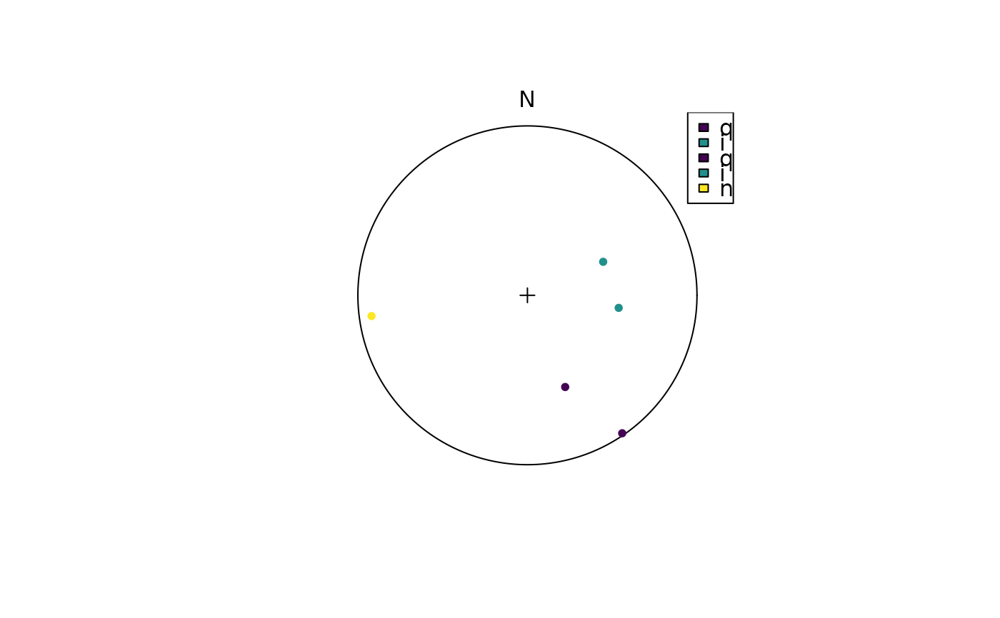
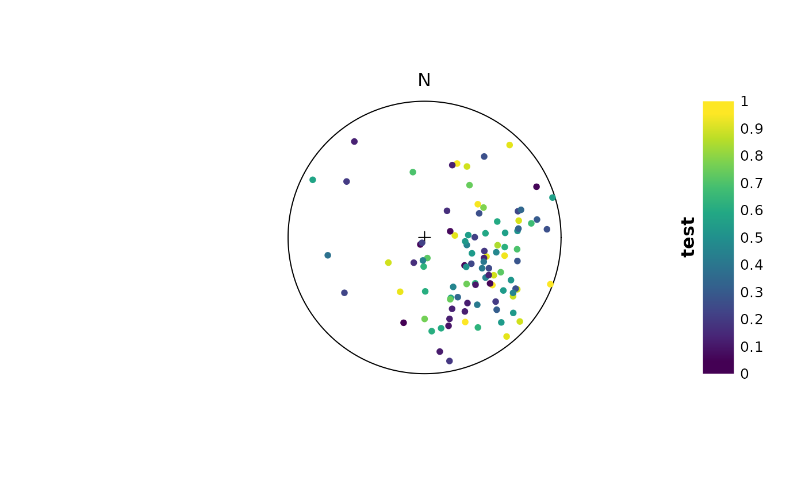

Helper functions for color assignment and legends
Arguments
- x
vector to colorize
- pal
color function; Default is
viridis::viridis()- ...
arguments passed to color function
- n
integer.
- breaks
numeric.
- title
character. Legend title
- fill
color vector
- labels
character.vector. Names of discrete colors. Can be ignored when
colsis a named vector.- position
Legend position
Examples
set.seed(1234)
# example for discrete colors
x <- rvmf(5, mu = Line(120, 50), k = 5)
key <- letters[round(runif(5, 1, 26))]
plot(x, col = assign_col_d(key), grid.params = list(guides = FALSE))
legend_d(assign_col_d(key))

# example for continuous colors:
x <- rvmf(100, mu = Line(120, 50), k = 5)
plot(x, col = assign_col(runif(100)), grid.params = list(guides = FALSE))
legend_c(seq(0, 1, .1), title = "test")
